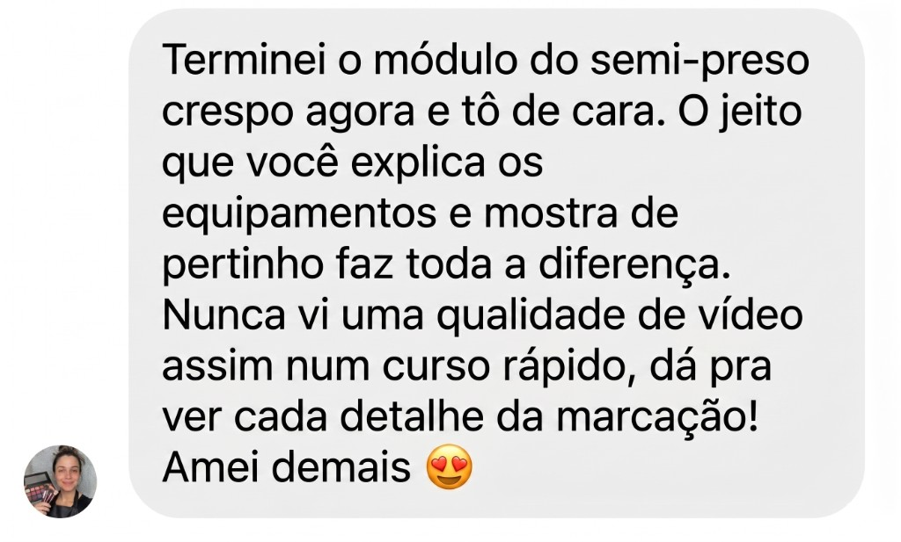
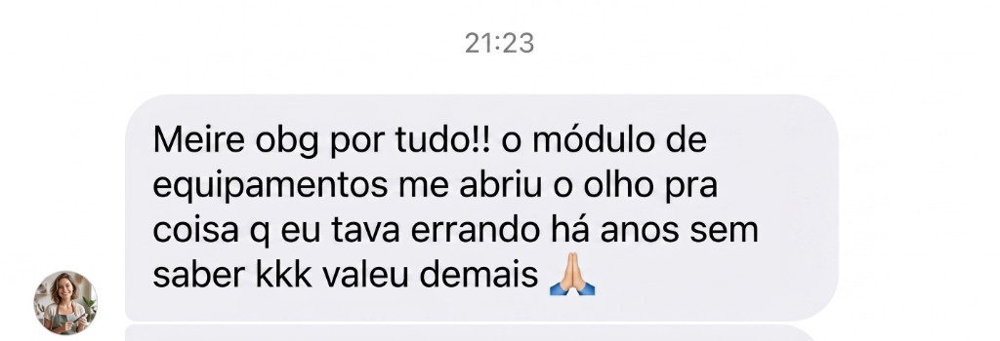
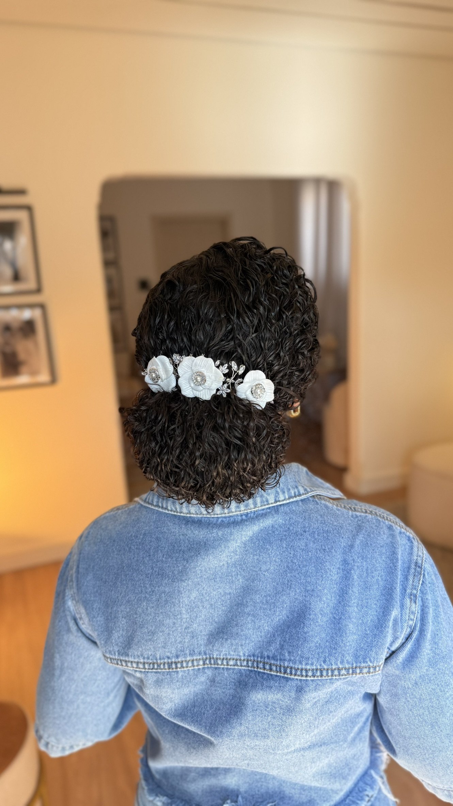
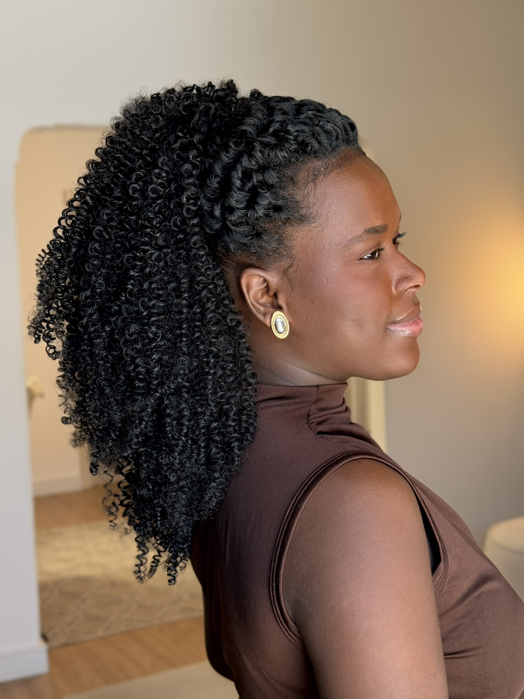
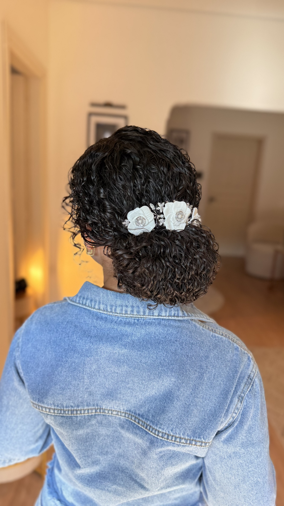

Módulo 01
O Mapa da Especialista
Como se posicionar e entender a estrutura do fio antes mesmo de colocar a mão na cliente.
Pare de recusar clientes ou sentir medo quando uma cacheada senta na sua cadeira. O Passo Zero entrega a base técnica exata para você estruturar coques e semi presos que duram a festa inteira com segurança absoluta.
Oportunidade Real
Cada cliente que você não atende por medo da textura natural é um lucro que vai para a sua concorrência.
Feedbacks
Sem milagres. Apenas prints reais de alunas que aplicaram o Passo Zero, treinaram e hoje têm segurança absoluta nos seus atendimentos.




Qualificação
Veja se o momento é o de investir na sua especialização em cabelos naturais.
Conteúdo do curso
O quadro na parede que você quer é a agenda lotada e o cliente satisfeito. Essa é a "furadeira" que vai te levar até lá.
Como se posicionar e entender a estrutura do fio antes mesmo de colocar a mão na cliente.
O passo a passo do penteado mais pedido por noivas, com a fitagem que garante durabilidade extrema.
Domine o controle de volume e a texturização para entregar acabamentos que parecem feitos por mágica.
Resultados reais
Trabalhos e acabamentos que valorizam a textura natural em eventos.




Garanta sua vaga na nossa próxima aula exclusiva para especialistas.
Quero garantir minha aula e meu desconto VIPEspecialista em penteados para cabelos naturais
Com anos de experiência dedicada a noivas, debutantes e produções sociais, Meire desenvolveu uma metodologia que respeita o fio e valoriza cachos e crespos. Cada penteado que ela ensina foi testado na prática — com clientes reais, em eventos reais.
Ela já formou centenas de alunas que hoje atendem eventos com segurança e cobram o valor que o trabalho merece.
Acompanhe o trabalho no Instagram: @meirerodriguespenteados
Dúvidas frequentes
Não. O curso começa pela estrutura do fio — você aprende a entender o cabelo antes de aplicar qualquer técnica. Funciona para quem está começando e para quem já trabalha mas quer segurança com naturais.
Sim — e isso é o diferencial da metodologia. O módulo de fitagem ensina a criar uma base que sustenta o penteado durante horas. Alunas relatam que o cabelo ficou "intacto do começo ao fim da festa".
O acesso é liberado por 1 ano inteiro. Você assiste no seu ritmo, quantas vezes quiser, de qualquer dispositivo durante esse período.
Sim. Maquiadoras que entendem de penteado em cabelo natural ampliam muito o serviço que oferecem — conseguem orientar ou complementar o trabalho de noivas e madrinhas em eventos.
Acesso Imediato
O primeiro passo para dominar penteados em cabelos naturais e faturar mais.
Quero garantir minha aula e meu desconto VIP